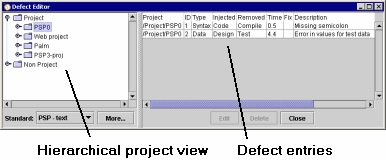

You can use the defect log editor to correct mistakes you might make when entering defects.

The left pane shows the current project hierarchy. Picking various branches on the hierarchy will limit the defect entries displayed to just those on the branch chosen.
To change data in the defect entries, just pick on the element that you would like to change. When a particular defect entry is picked, the Edit button becomes active. Clicking the Edit button will bring up the same dialog box used to enter defects. All the defect data can be changed using this dialog. For help using the defect entry dialog please see the Entering defects help topic.